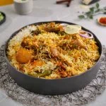

Take your homemade biryani to the next level! Asad Memon shares his Special Chatkhara Biryani recipe with easy tips and techniques to help you get the perfect flavor, aroma, and texture every time. Made with #Dalda, our #trustedrecipepartner, for delicious results you’ll love. #FoodFusion #HappyCookingToYou #Chickenbiryani #BiryaniRecipe #ArayWahh #PakistaniFood
Recipe video
In a bowl, add yogurt, ginger garlic paste, crushed green chillies, red chilli powder, turmeric powder, garam masala powder, cumin, coriander, kashmiri red chilli powder, pink salt, bombay biryani masala, lemon juice, & whisk well. Add chicken, apply marinade evenly. Cover & marinate for 2 hours. In a cooking pot, add Dalda cooking oil & heat it. Add potato, fry on medium flame until light golden, take out & set aside. In the same oil, add onion & fry on medium flame until golden brown. Take out half the quantity of fried onion, & set aside. Add tomato puree & cook for 1-2 minutes. Now add black peppercorns, cloves, star anise, black cardamom, green cardamom, cumin, bay leaves & mix well. Cook on medium flame for 4-5 minutes or until oil separates. Add marinated chicken, mint leaves, fresh coriander, green chillies & mix well Cook on medium flame for 4-5 minutes. Add fried potato, mix well, cook on medium flame for 10 minutes, mix in between. In a bowl, add reserved fried onion, mint leaves, fresh coriander, dried plum, crushed pickle, mix well, layering mixture is ready. Set aside. In a prepared chicken korma, add prepared layering mixture and boiled rice, make holes with the help of the back of the spoon, add orange food color & kewra water mixture inside the holes. Add banaspati, cover with a kitchen cloth & lid, cook on high flame for 5 minutes, then lower the flame & steam cook for 15-20 minutes. Serve with salad & raita!
Index Page